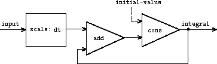

Streams with delayed evaluation can be a powerful modeling tool, providing many of the benefits of local state and assignment. Moreover, they avoid some of the theoretical tangles that accompany the introduction of assignment into a programming language.
The stream approach can be illuminating because it allows us to build systems with different module boundaries than systems organized around assignment to state variables. For example, we can think of an entire time series (or signal) as a focus of interest, rather than the values of the state variables at individual moments. This makes it convenient to combine and compare components of state from different moments.
Formulating iterations as stream processes
In Section , we introduced iterative
processes, which proceed by updating state variables. We know now
that we can represent state as a timeless
stream of values rather
than as a set of variables to be updated. Let's adopt this
perspective in revisiting the square-root
function
from
Section . Recall that the idea is to generate a
sequence of better and better guesses for the square root of $x$ by
applying over and over again the
function
that improves guesses:
function sqrt_improve(guess, x) {
return average(guess, x / guess);
}
In our original sqrt function, we made these guesses be the successive values of a state variable. Instead we can generate the infinite stream of guesses, starting with an initial guess of 1:[1] function sqrt_stream(x) { var guesses = pair(1.0, function() { return stream_map(function(guess) { return sqrt_improve(guess, x); }, guesses); }); return guesses; } display(eval_stream(sqrt_stream(2), 5)); // [1, [1.5, [1.4166666666666665, [1.4142156862745097, // [1.4142135623746899, []]]]]]
We can generate more and more terms of the stream to get better and better guesses. If we like, we can write a function that keeps generating terms until the answer is good enough. (See Exercise .)
Another iteration that we can treat in the same way is to generate an approximation to $\pi$, based upon the alternating series that we saw in Section : \[ \frac {\pi}{4} = 1-\frac{1}{3}+\frac{1}{5}-\frac{1}{7}+\cdots \]
We first generate the stream of summands of the series (the reciprocals of the odd integers, with alternating signs). Then we take the stream of sums of more and more terms (using the partial_sums function of Exercise ) and scale the result by 4: function pi_summands(n) { return pair(1.0 / n, function() { return stream_map(function(x) { return -x; }, pi_summands(n + 2)); }); } var pi_stream = scale_stream(partial_sums(pi_summands(1)), 4); display(eval_stream(pi_stream, 8)); // [4, [2.666666666666667, [3.466666666666667, // [2.8952380952380956, [3.3396825396825403, [2.9760461760461765, // [3.2837384837384844, [3.017071817071818, []]]]]]]]]
This gives us a stream of better and better approximations to $\pi$, although the approximations converge rather slowly. Eight terms of the sequence bound the value of $\pi$ between 3.284 and 3.017.
So far, our use of the stream of states approach is not much different from updating state variables. But streams give us an opportunity to do some interesting tricks. For example, we can transform a stream with a sequence accelerator that converts a sequence of approximations to a new sequence that converges to the same value as the original, only faster.
One such accelerator, due to the eighteenth-century Swiss mathematician Leonhard Euler, works well with sequences that are partial sums of alternating series (series of terms with alternating signs). In Euler's technique, if $S_n$ is the $n$th term of the original sum sequence, then the accelerated sequence has terms \[ S_{n+1} - \frac{(S_{n+1}-S_n)^2}{S_{n-1}-2S_n+S_{n+1}} \] Thus, if the original sequence is represented as a stream of values, the transformed sequence is given by function euler_transform(s) { var s0 = stream_ref(s, 0); var s1 = stream_ref(s, 1); var s2 = stream_ref(s, 2); return pair(s2 - square(s2 - s1) / (s0 + (-2) * s1 + s2), function() { return euler_transform(stream_tail(s)); }); }
We can demonstrate Euler acceleration with our sequence of approximations to $\pi$: display(eval_stream(euler_transform(pi_stream), 8)); // [3.166666666666667, [3.1333333333333337, [3.1452380952380956, // [3.13968253968254, [3.1427128427128435, [3.1408813408813416, // [3.142071817071818, [3.1412548236077655, []]]]]]]]]
Even better, we can accelerate the accelerated sequence, and recursively accelerate that, and so on. Namely, we create a stream of streams (a structure we'll call a tableau) in which each stream is the transform of the preceding one: function make_tableau(transform, s) { return pair(s, function() { return make_tableau(transform, transform(s)); }); }
The tableau has the form \[ \begin{array}{llllll} s_{00} & s_{01} & s_{02} & s_{03} & s_{04} & \ldots\cr & s_{10} & s_{11} & s_{12} & s_{13} & \ldots\cr & & s_{20} & s_{21} & s_{22} & \ldots\cr & & & & \ldots & \end{array} \]
Finally, we form a sequence by taking the first term in each row of
the tableau:
function accelerated_sequence(transform, s) {
return stream_map(head, make_tableau(transform, s));
}
We can demonstrate this kind of super-acceleration
of the $\pi$
sequence:
display(eval_stream(accelerated_sequence(euler_transform,
pi_stream),
8));
// [4, [3.166666666666667, [3.142105263157895,
// [3.141599357319005, [3.1415927140337785, [3.1415926539752927,
// [3.1415926535911765, [3.141592653589778, []]]]]]]]]
The result is impressive. Taking eight terms of the sequence yields the correct value of $\pi$ to 14 decimal places. If we had used only the original $\pi$ sequence, we would need to compute on the order of $10^{13}$ terms (i.e., expanding the series far enough so that the individual terms are less then $10^{-13}$) to get that much accuracy!
We could have implemented these acceleration techniques without using streams. But the stream formulation is particularly elegant and convenient because the entire sequence of states is available to us as a data structure that can be manipulated with a uniform set of operations.
Infinite streams of pairs
In Section , we saw how the sequence paradigm
handles traditional nested loops as processes defined on sequences of
pairs. If we generalize this technique to infinite streams, then we
can write programs that are not easily represented as loops, because
the looping
must range over an infinite set.
For example, suppose we want to generalize the prime_sum_pairs function of Section to produce the stream of pairs of all integers $(i,j)$ with $i \leq j$ such that $i+j$ is prime. If int_pairs is the sequence of all pairs of integers $(i,j)$ with $i \leq j$, then our required stream is simply[2] stream_filter(function(pair) { return is_prime(head(pair) + head(tail(pair))); }, int_pairs);
Our problem, then, is to produce the stream int_pairs. More generally, suppose we have two streams $S = (S_i)$ and $T = (T_j)$, and imagine the infinite rectangular array \[ \begin{array}{cccc} (S_0,T_0) & (S_0,T_1) & (S_0, T_2) & \ldots\cr (S_1,T_0) & (S_1,T_1) & (S_1, T_2) & \ldots\cr (S_2,T_0) & (S_2,T_1) & (S_2, T_2) & \ldots\cr \ldots \end{array} \] We wish to generate a stream that contains all the pairs in the array that lie on or above the diagonal, i.e., the pairs \[ \begin{array}{cccc} (S_0,T_0) & (S_0,T_1) & (S_0, T_2) & \ldots\cr & (S_1,T_1) & (S_1, T_2) & \ldots\cr & & (S_2, T_2) & \ldots\cr & & & \ldots \end{array} \] (If we take both $S$ and $T$ to be the stream of integers, then this will be our desired stream int_pairs.)
Call the general stream of pairs pairs(S, T), and consider it to be composed of three parts: the pair $(S_0,T_0)$, the rest of the pairs in the first row, and the remaining pairs:[3] \[ \begin{array}{c|ccc} (S_0,T_0) & (S_0,T_1) & (S_0, T_2) & \ldots\cr \hline & (S_1,T_1) & (S_1, T_2) & \ldots\cr & & (S_2, T_2) & \ldots\cr & & & \ldots \end{array} \] Observe that the third piece in this decomposition (pairs that are not in the first row) is (recursively) the pairs formed from stream_tail(S) and stream_tail(T). Also note that the second piece (the rest of the first row) is stream_map(function(x) { return list(head(s), x); }, stream_tail(t));
Thus we can form our stream of pairs as follows: function pairs(s, t) { return pair(list(head(s), head(t)), function() { return <combine_in_some_way>( stream_map(function(x) { return list(head(s), x); }, stream_tail(t)), pairs(stream_tail(s), stream_tail(t)) ); }); }
In order to complete the function, we must choose some way to combine the two inner streams. One idea is to use the stream analog of the append function from Section : function stream_append(s1, s2) { if (is_empty_list(s1)) { return s2; } else { return pair(head(s1), function() { return stream_append(stream_tail(s1), s2); }); } }
This is unsuitable for infinite streams, however, because it takes all the elements from the first stream before incorporating the second stream. In particular, if we try to generate all pairs of positive integers using pairs(integers, integers); our stream of results will first try to run through all pairs with the first integer equal to 1, and hence will never produce pairs with any other value of the first integer.
To handle infinite streams, we need to devise an order of combination that ensures that every element will eventually be reached if we let our program run long enough. An elegant way to accomplish this is with the following interleave function:[4] function interleave(s1, s2) { if (is_empty_list(s1)) { return s2; } else { return pair(head(s1), function() { return interleave(s2, stream_tail(s1)); }); } }
Since interleave takes elements alternately from the two streams, every element of the second stream will eventually find its way into the interleaved stream, even if the first stream is infinite.
We can thus generate the required stream of pairs as function pairs(s, t) { return pair(list(head(s), head(t)), function() { return interleave(stream_map(function(x) { return list(head(s), x); }, stream_tail(t)), pairs(stream_tail(s), stream_tail(t))); }); }
less thananother. One way to do this is to define a
weighting function$W(i,j)$ and stipulate that $(i_1,j_1)$ is less than $(i_2,j_2)$ if $W(i_1,j_1) < W(i_2,j_2)$. Write a function merge_weighted that is like merge, except that merge_weighted takes an additional argument weight, which is a function that computes the weight of a pair, and is used to determine the order in which elements should appear in the resulting merged stream.[5] Using this, generalize pairs to a function weighted_pairs that takes two streams, together with a function that computes a weighting function, and generates the stream of pairs, ordered according to weight. Use your function to generate
- the stream of all pairs of positive integers $(i,j)$ with $i \leq j$ ordered according to the sum $i + j$
- the stream of all pairs of positive integers $(i,j)$ with $i \leq j$, where neither $i$ nor $j$ is divisible by 2, 3, or 5, and the pairs are ordered according to the sum $2 i + 3 j + 5 i j$.
Streams as signals
We began our discussion of streams by describing them as computational
analogs of the signals
in signal-processing systems. In fact, we
can use streams to model signal-processing systems in a very direct
way, representing the values of a signal at successive time intervals
as consecutive elements of a stream. For instance, we can implement
an
integrator or
summer that, for an input stream
$x=(x_{i})$, an initial value $C$, and a small increment $dt$,
accumulates the sum
\[ S_i =C +\sum_{j=1}^{i} x_{j} \, dt \]
and returns the stream of values $S=(S_{i})$. The following integral
function
is reminiscent of the implicit style
definition of the
stream of integers (Section ):
function integral(integrand, initial_value, dt) {
var integ = pair(initial_value, function() {
return add_streams(scale_stream(integrand, dt),
integ);
});
return integ;
}

Figure is a picture of a signal-processing system that corresponds to the integral function. The input stream is scaled by $dt$ and passed through an adder, whose output is passed back through the same adder. The self-reference in the definition of int is reflected in the figure by the feedback loop that connects the output of the adder to one of the inputs.
 We can model electrical circuits using streams to represent the values
of currents or voltages at a sequence of times. For instance, suppose
we have an RC circuit consisting of a resistor of resistance $R$
and a capacitor of capacitance $C$ in series. The voltage response
$v$ of the circuit to an injected current $i$ is determined by the
formula in Figure , whose structure is shown by the accompanying
signal-flow diagram.
We can model electrical circuits using streams to represent the values
of currents or voltages at a sequence of times. For instance, suppose
we have an RC circuit consisting of a resistor of resistance $R$
and a capacitor of capacitance $C$ in series. The voltage response
$v$ of the circuit to an injected current $i$ is determined by the
formula in Figure , whose structure is shown by the accompanying
signal-flow diagram.
Write a function RC that models this circuit. RC should take as inputs the values of $R$, $C$, and $dt$ and should return a function that takes as inputs a stream representing the current $i$ and an initial value for the capacitor voltage $v_{0}$ and produces as output the stream of voltages $v$. For example, you should be able to use RC to model an RC circuit with $R = 5$ ohms, $C = 1$ farad, and a 0.5-second time step by evaluating var RC1 = RC(5, 1, 0.5). This defines RC1 as a function that takes a stream representing the time sequence of currents and an initial capacitor voltage and produces the output stream of voltages.
It was Mr. Littlewood (I believe) who remarked thatThe trick of using weighted pairs to generate the Ramanujan numbers was shown to us by Charles Leiserson.every positive integer was one of his friends.I remember once going to see him when he was lying ill at Putney. I had ridden in taxi-cab No. 1729, and remarked that the number seemed to me a rather dull one, and that I hoped it was not an unfavorable omen.No,he replied,it is a very interesting number; it is the smallest number expressible as the sum of two cubes in two different ways.